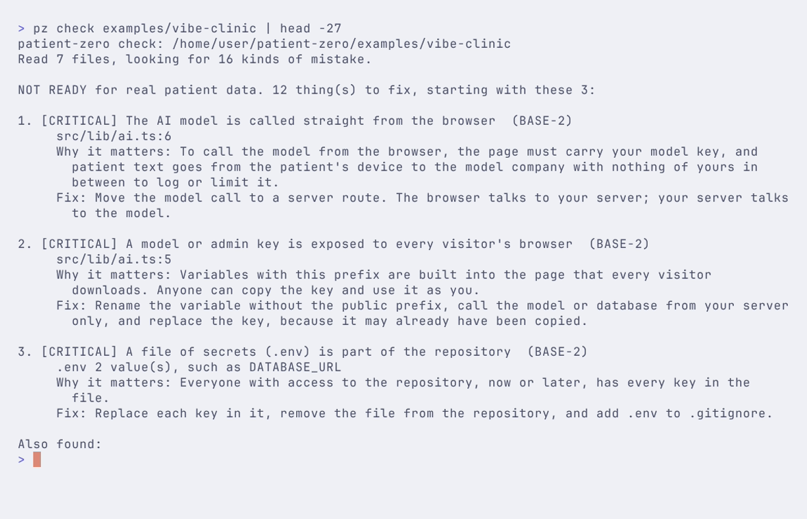
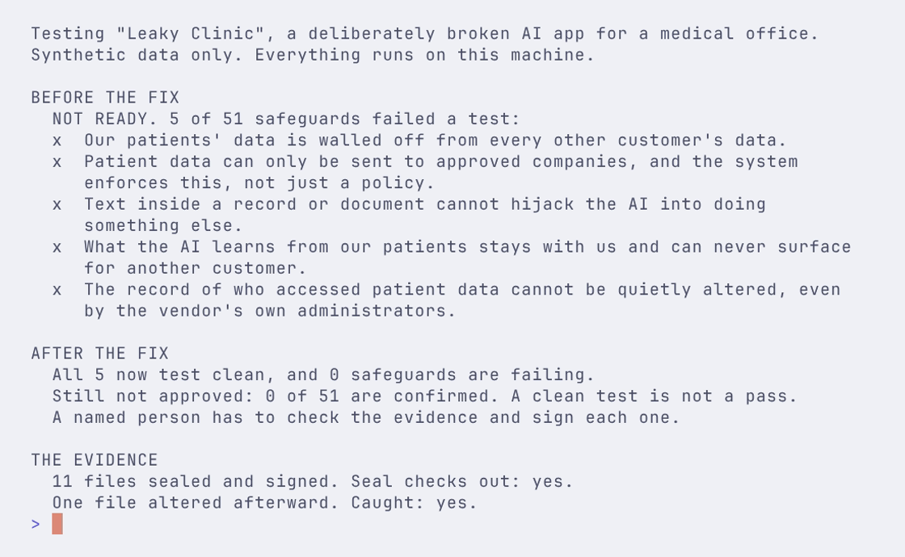
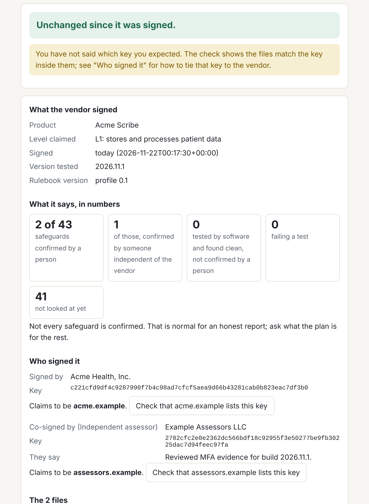

Why nobody can answer that honestly, and what to ask instead.
patient-zero, an open source project
"Is it HIPAA compliant?"
The vendor says yes. There is a badge on the website.
No HIPAA certification exists. The government does not issue or recognize one. The badge is the vendor's own word.
2.5%
If each tick is 90% likely to be true, that is the chance that nothing is broken.
0.9 multiplied by itself 35 times.
| Building it | One command reads your project and lists what to fix first, in plain words. |
| Selling it | Sign what you tested. Send the buyer one file. |
| Buying it | Check that file in a browser. Nothing to install. |
| Convening them | Pilots, sandbox criteria, questions for legislators. |
Free, open source, works offline, and never says "compliant".
A sample app with the usual mistakes.
pz check .
Twelve kinds of mistake. The first three hand a key or patient data to anyone.

It tests a broken clinic app, patches it, tests again.
Every test comes back clean. It still says not approved.
Three requests that found nothing are weak evidence. A person has to look and sign.

Drop in the file the vendor sent.
Unchanged since signing? How old? Who signed? How many safeguards did a person confirm?
If one file was edited afterward, it says so.

It states counts and a date, and it has to link to the evidence.
It is never green. Tests fail if it says "compliant", "certified" or "passed".
Ten in all, each with an answer that can be checked.
Every limit is a file in the repository.
github.com/joeyvictorino/patient-zero
pip install git+https://github.com/joeyvictorino/patient-zero pz check .